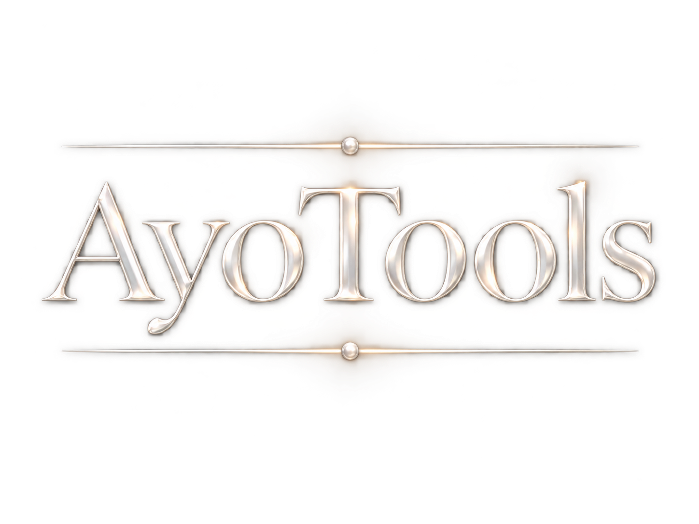
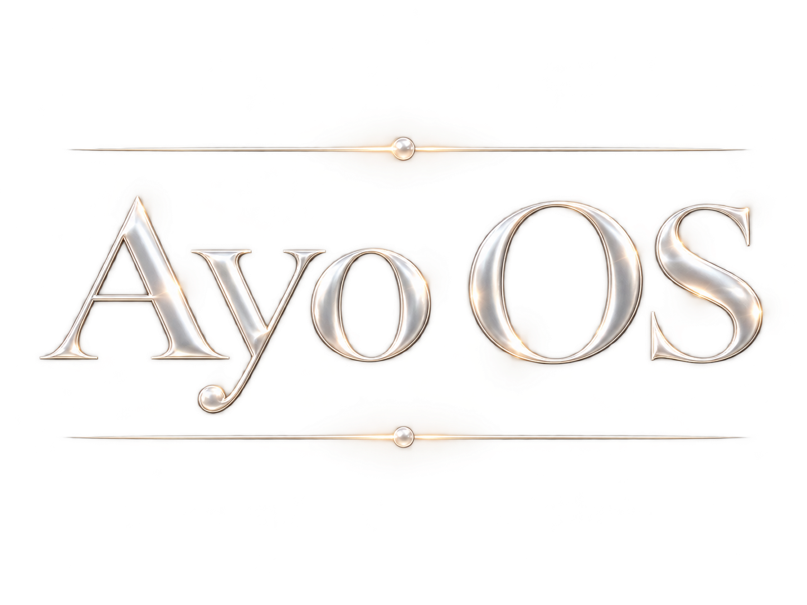

Aplikacje i narzędzia Wejdź 02
Autorski system operacyjny Wkrótce 03 Opowieść i osobny świat WejdźAYO WORLDS
Wybierz portal i przejdź do jednego ze światów Ayo.

Aplikacje i narzędzia Wejdź 02
Autorski system operacyjny Wkrótce 03 Opowieść i osobny świat Wejdź